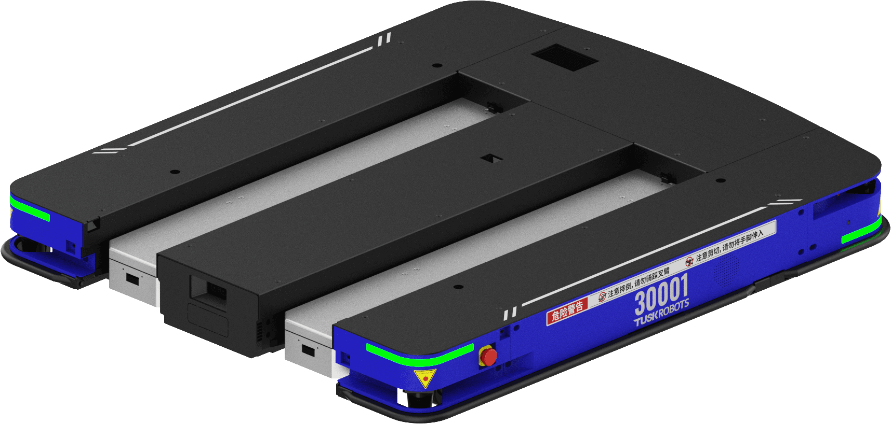
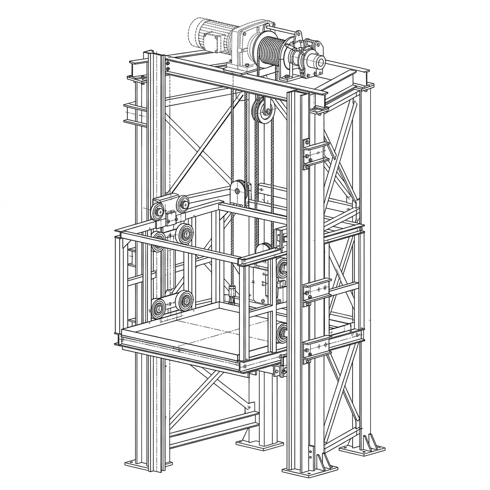
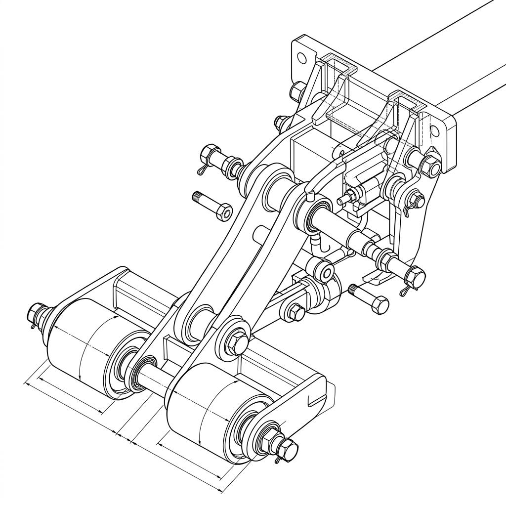
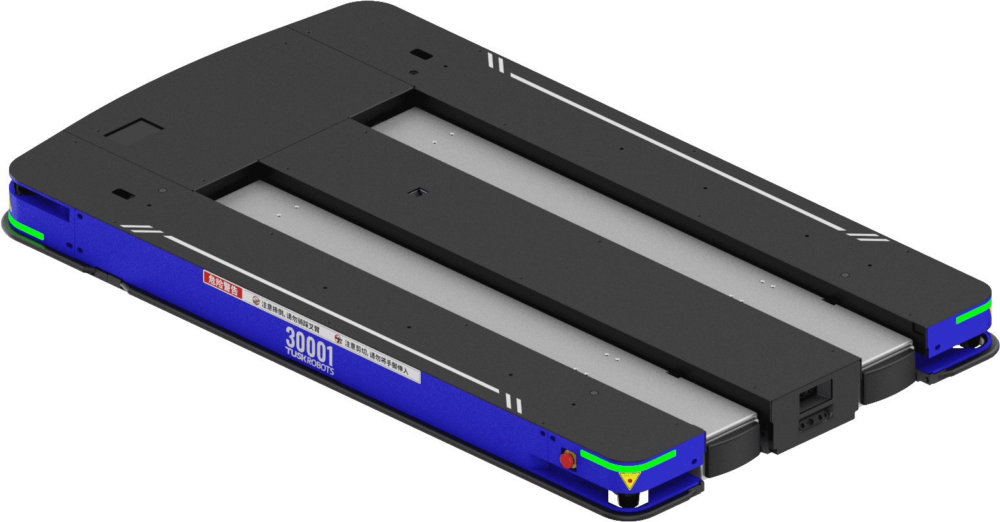
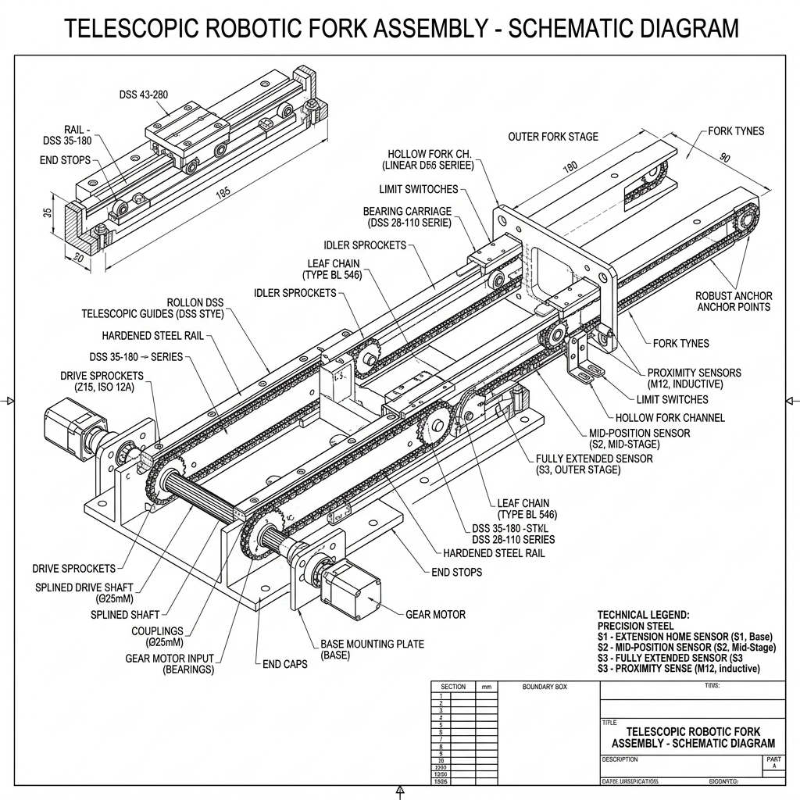
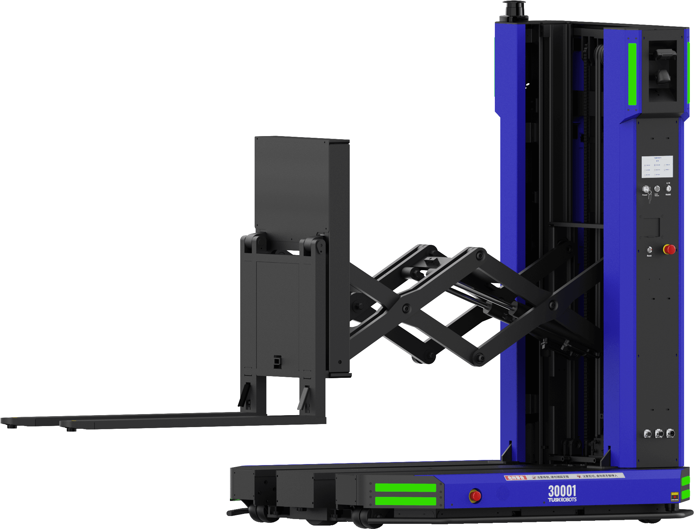
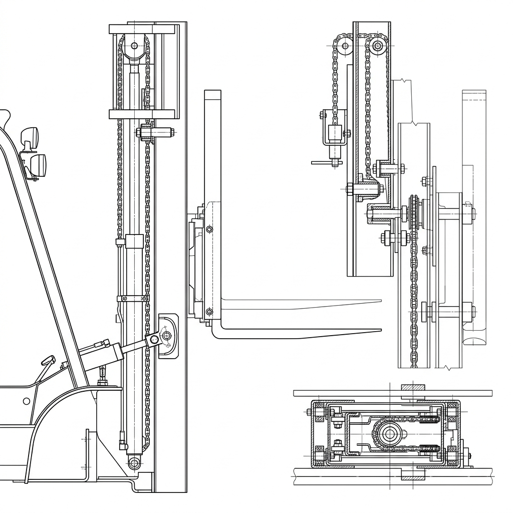
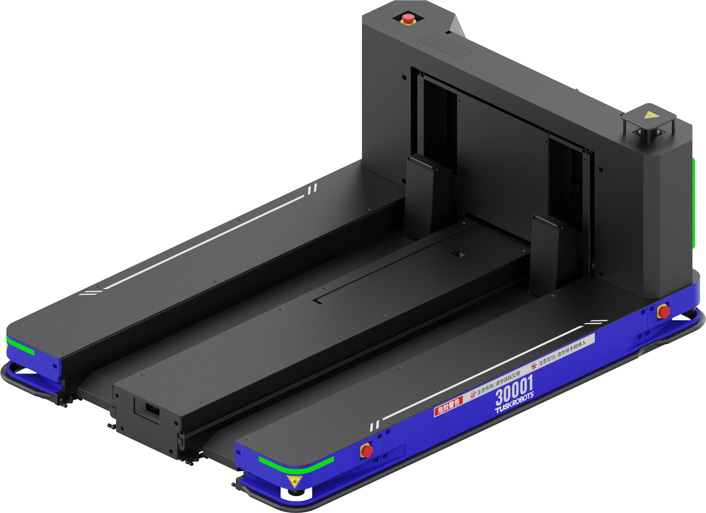
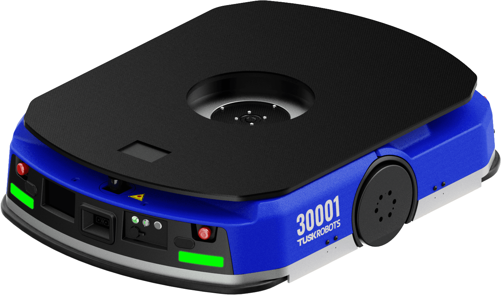

This engineering report details the product families, mechanical subsystems, kinematics, and component specifications for different versions of the low-profile Autonomous Pallet-handling Robot (APR) family developed by Tusk Robots.
The document is organized by robot model, outlining each version's design intent, real-world appearance, core mechanical mechanisms, and component tables.
The standard E10 is the flagship autonomous pallet handling robot designed for open-bottom pallets (like EUR-1). It is designed to slide fully underneath the pallet, keeping a low outline only slightly wider than the load itself.

Rather than having separate scissor lifts and motors inside each individual fork, the E10 uses a single centralized lift carriage on the front face of the chassis to raise and lower the fork carrier plate. This keeps the forks extremely thin (65 mm), eliminates the need for synchronization logic, and reduces weight.
1. Two vertical linear profile rails are mounted on the front plate of the robot chassis.
2. The vertical lift carriage plate slides vertically along these rails.
3. A single vertical ball screw (25mm diameter, 5mm lead) is mounted centrally.
4. A 1000W BLDC motor with a 1:15 gearbox is mounted at the top, coupled to the ball screw.
5. When the motor rotates the ball screw, the ball nut pushes the carriage vertically, lifting both forks, the telescopic slides, and the load simultaneously.

| Component Name | Manufacturer / Model | Specifications | Function / Purpose |
|---|---|---|---|
| Vertical Linear Guides | Premium Brand / Heavy-Duty | Profile linear guide rails, L=500mm, carbon steel | Provides rigid vertical guidance and prevents carriage twisting |
| Vertical Ball Screw | Premium Brand / Precision Ball Screw | Dia 25mm, 5mm lead, C7 accuracy, ball screw nut | Transforms motor rotation into high-force vertical linear motion |
| BLDC Lift Motor | Leadshine / 48V 1000W | Brushless DC motor; rated speed 3000 RPM; electromagnetic brake | Power source for lifting the 1-ton carriage assembly |
| Planetary Gearbox | local supplier / 1:15 ratio | Inline planetary gearbox; backlash < 8 arc-min; efficiency 95% | Multiplies motor torque to overcome vertical gravitational load |
| Carriage Plate | Custom CNC | 8mm A36 steel plate, precision welded | Mounts the forks, width slides, and telescopic extenders |
| Limit Sensors | Omron / E2E Proximity | Cylindrical inductive sensors, NC/NO outputs | Detects vertical travel limits to prevent mechanical crash |
For the standard E10 (fixed-length forks), a passive mechanical pull-rod is used to retract the wheel inside the fork when lowered and deploy it when raised.
1. Inside the hollow channel of each fixed fork runs a rigid, adjustable pull-rod.
2. The front end of the pull-rod is pinned to the Bogie swingarm holding the tandem load rollers.
3. The rear end of the pull-rod is pinned to a lever on the vertical lift carriage frame.
4. When the carriage is at its lowest position, the linkage pulls the rod back, rotating the swingarm UP to fold the rollers inside the fork cavity.
5. As the carriage begins to rise, the linkage pushes the rod forward, forcing the swingarm to rotate DOWN to contact the floor.

| Component Name | Manufacturer / Model | Specifications | Function / Purpose |
|---|---|---|---|
| Tandem Load Rollers | Blickle / Dia 60mm | Polyurethane tread on steel core, needle bearings, 350kg capacity each | Support wheels that roll on the warehouse floor under the pallet |
| Pivot Swingarm (Bogie) | Custom Weldment | Cast steel (45#), precision-machined pivot holes | Houses the tandem rollers and rotates relative to the fork tyne |
| Actuation Pull-Rods | Custom Turnbuckle | High-tensile steel rods (M16 threads) for length calibration (E10 standard specific) | Transmits vertical carriage motion to the front pivot swingarms |
| Return Tension Springs | local supplier / 1.5mm wire | Spring steel, rate 25 N/mm, length 150mm | Pulls the swingarms back into the folded position when unloaded |
| Pivot Pins & Bushings | MIsumi / Hardened Steel | Dia 20mm, self-lubricating bronze bushings | High-load joints for swingarm and pull-rod linkages |
The E10T is configured with telescopic extending forks for narrow aisles, designed to pick and place closed-bottom or double-sided pallets (like EUR-2) without moving the main chassis forward.

This mechanism allows the forks to slide out forward from the lift carriage into the pallet openings while the AMR remains stationary, cutting pick aisle requirements to just 2.0 m.
1. A single 24V 200W geared servo motor is mounted on the lift carriage.
2. This motor drives a transverse splined shaft.
3. Two chain drive sprockets slide along the splined shaft when the fork width adjusts, but rotate with it.
4. Each fork channel contains a dual-stage multi-stage industrial telescopic guide slide rail and a closed-loop leaf chain.
5. When the motor rotates the splined shaft, the chain loops pull the intermediate and outer stages of the telescopic slides forward, extending the forks by up to 1400 mm (over-extension).

| Component Name | Manufacturer / Model | Specifications | Function / Purpose |
|---|---|---|---|
| Telescopic Slides | Premium Brand / Heavy-Duty Slides | Heavy-duty multi-stage linear slides; over-extension up to 1400mm; Q235 steel | Supports high vertical cantilever loads during fork extension |
| Geared Drive Motor | Leadshine / 24V 200W | Brushless DC geared servo motor; torque 2.5 Nm; integrated encoder | Actuates the transverse splined shaft to slide forks in/out |
| Splined Drive Shaft | Custom / Dia 25mm | High-tensile steel (40Cr), hardened spline profile | Transmits motor torque to sliding sprockets across adjustable width |
| Leaf Chains & Sprockets | local supplier / High-Strength | High-strength leaf chains, Z15 sprockets | Pulls the telescopic slide stages forward and backward |
| Proximity Sensors | Sick / M12 Inductive | 4mm sensing range; NPN NO; IP67 | Detects home, mid-stage, and full-extension positions |
Because the forks extend telescopically, a rigid pull-rod is impossible. The E10T uses a localized electric actuator at the fork tip.
1. A compact, high-force 24V electric linear actuator is mounted directly inside the tip of the outer fork stage.
2. Electrical power and control cables are routed from the main carriage to the actuator through a flexible plastic drag chain (cable track) that bends and nests inside the telescopic slide stages.
3. During extension, the actuator is kept fully retracted, holding the Bogie swingarm UP inside the fork cavity so it clears the bottom boards of the pallet.
4. When the fork reaches full extension (detected by proximity sensors), the controller sends a 24V signal to the linear actuator, extending its piston shaft.
5. This pushes the bogie swingarm DOWN through the gaps in the bottom boards of the pallet until the polyurethane rollers contact the floor.
| Component Name | Manufacturer / Model | Specifications | Function / Purpose |
|---|---|---|---|
| Tandem Load Rollers | Blickle / Dia 60mm | Polyurethane tread on steel core, needle bearings, 350kg capacity each | Support wheels that roll on the warehouse floor under the pallet |
| Pivot Swingarm (Bogie) | Custom Weldment | Cast steel (45#), precision-machined pivot holes | Houses the tandem rollers and rotates relative to the fork tyne |
| Electric Linear Actuator | local supplier / 24V DC | Compact high-force linear actuator; 50mm stroke; thrust 2500 N (E10T specific) | Mounts inside telescopic fork tip to push/pull swingarm directly |
| Flexible Drag Chain | Premium Brand / Cable Track | Miniature plastic energy chain; minimum bending radius 28mm (E10T specific) | Routes actuator power and sensor cables inside telescopic stages |
| Return Tension Springs | local supplier / 1.5mm wire | Spring steel, rate 25 N/mm, length 150mm | Pulls the swingarms back into the folded position when unloaded |
| Pivot Pins & Bushings | Misumi / Hardened Steel | Dia 20mm, self-lubricating bronze bushings | High-load joints for swingarm and pull-rod/actuator linkages |
The FL10 is a mast-type forklift stacker robot designed for lifting pallets into vertical storage racks and performing double-layer stacking in warehouse lanes.

The FL10 requires lifting pallets up to 2.5 m for double-layer stacking in warehouse racks. This requires a nested telescoping mast structure.
1. Outer C-channel steel masts are fixed to the robot chassis.
2. Inner C-channel masts slide vertically inside the outer masts on sealed guide rollers.
3. A central hydraulic cylinder or an electric motor-driven leaf chain lift is actuated.
4. The piston rod pushes the inner mast upward.
5. Leaf chains anchored to the outer mast run over sheaves at the top of the inner mast and attach to the fork carriage.
6. This 2:1 mechanical ratio lifts the fork carriage at twice the speed of the inner mast extension, reaching a lift height of 2500 mm.

| Component Name | Manufacturer / Model | Specifications | Function / Purpose |
|---|---|---|---|
| Nested Mast Channels | Custom / C-profile | High-strength steel Q345; 180 x 70 x 10 mm outer channel | Main structural guide channels for high-reach lifting |
| Leaf Chains | local supplier / Heavy-Duty | Heavy-duty forklift leaf chains; pitch 15.875mm; tensile strength 80 kN | Suspends the carriage and transmits the 2:1 lifting force |
| Lifting Cylinder | Custom / Hydraulic | 80mm bore, 1200mm stroke, chrome-plated piston rod | Pushes the inner mast vertically (for hydraulic lift versions) |
| Mast Guide Rollers | local supplier / Sealed Ball | Dia 110mm, hardened outer race, double-sealed | Guide wheels that slide inside C-channels under bending moments |
| Chain Sheaves (Pulleys) | Custom / Dia 120mm | Cast iron core, deep groove, needle roller bearings | Guides the leaf chains at the top of the inner mast stage |
| Wear Pads | local supplier / Nylon-66 | Self-lubricating wear plates, low friction | Prevents metal-to-metal friction between nested mast channels |
The T10 is a specialized split-fork layout where the two forks are separated by a central gap, designed for handling heavy bottom-board pallet configurations (like the "田" shaped pallet) in tight cross-docking operations.

The C-series represents underride tugger robots. The C10 rolls underneath custom wheeled cargo carts, locks onto them with an automated lifting pin, and tugs them throughout the factory floor.
